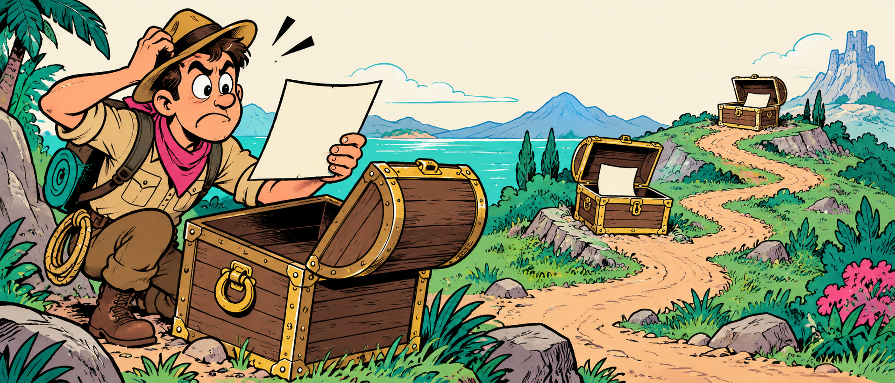

<section id="meme-quest" style="background:#000">
<h2 class="t nok">ХОТЕЛ ПРОЧИТАТЬ ЧИСЛО</h2>

<p class="meme-label ink" style="left:665px;top:448px;width:130px;font-size:42px">next</p>
<p class="meme-caption">Записался на <span class="sort">квест</span></p>
<aside>Следующий адрес лежит в предыдущем узле. [пауза 2 с]<br>Такой квест нельзя пройти, открыв все сундуки одновременно. Посмотрим, что изменится, если ключи разместить иначе.<br>[→ следующий слайд]<br><br>──────────<br>Источники и условия<br>Оригинальная иллюстрация ImageGen, V6; assets/src/img/memes_v6_late_prompts.txt. Мем №42: адрес следующего чтения зависит от предыдущего. Метафора механизма, не измеренная декомпозиция коэффициента ускорения.<br></aside>
</section>
